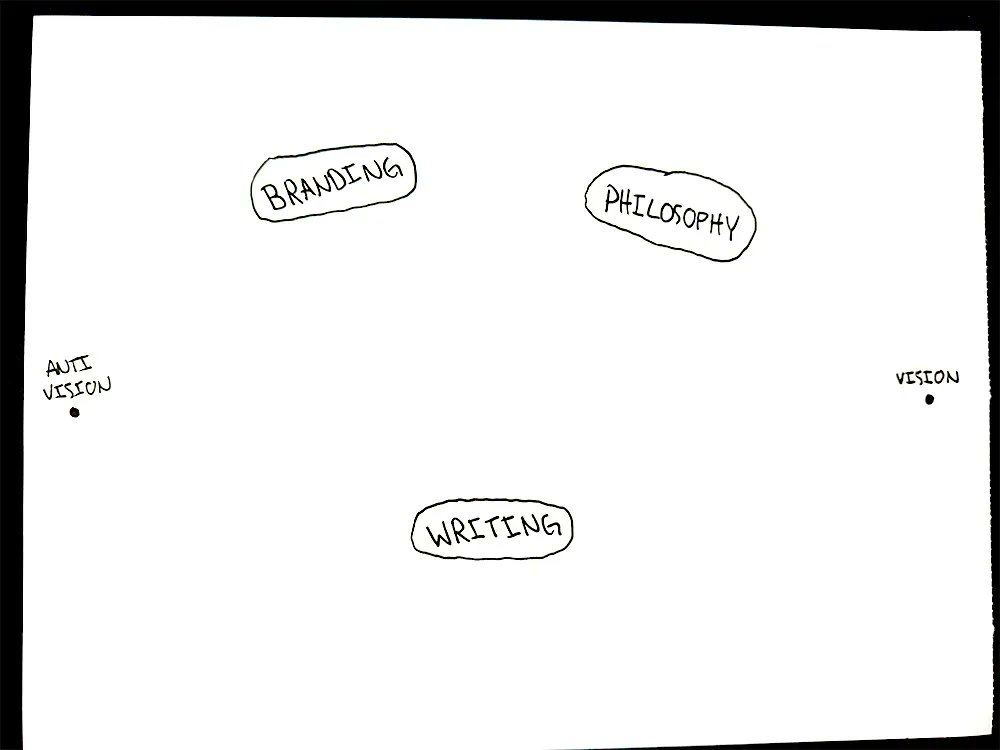

原题：Full Course: How To Turn Your Interests Into a Profitable Lifestyle Business
作者：Dan Koe（@thedankoe） | 发布：2026-10-06（北京时间；原始时间戳为 2026-10-05 16:48 UTC） | 原文：https://x.com/thedankoe/status/2107151068446789829
译注：【配图】为原文配图位置。文中称本文标题为"how to get rich from your interests"，与实际标题不一致，原文如此。提示词中"act ask great angles"应为"act as great angles"，"nurition"应为"nutrition"，按语义译出。文中有大量 Eden 产品的操作步骤，照译保留（界面名称附英文原词）。
如果你有多种兴趣，你大概完全不知道这辈子该做什么。
你觉得学校是浪费时间。也许你上了大学，但你觉得选一个专业学 4 年，对你的好奇心来说就是死刑（我好像换了 5 次专业……读了 5 年、欠了几万美元学生贷款，还是没毕业）。
而你不知道该从事什么职业，因为你想做的事情太多了。
你在社交媒体上听过"去创业"的建议，但都是同一套说法。
"选一个目标受众。"
"深耕细分，只谈一件事。"
诸如此类的建议。
如果你听了这种建议，最后你只会进入另一份朝九晚五，为你讨厌的人做你讨厌的项目，只不过你一天工作 12 小时而不是 8 小时，而且仍然付不起账单。
顺便说一句，我是在讲亲身经历。这就是我本人的故事。
我第一个算是半成功的"生意"，是做网页设计自由职业。但我厌倦了做别人的项目。我想做我自己的。所以我开始做社交媒体（因为如果我能建立一批受众，我就能建立我想要的任何一种生意，并以那种方式启动它）。
那时我才看到创作者们实际上在做什么。他们并不是一遍又一遍地只谈一个话题。因为那根本不是人们关注你的原因。
当你刷社交媒体时，你只是在读同一个话题吗？还是你在你的许多兴趣中看到各种不同的帖子和想法？
我意识到，一个对自我提升感兴趣的人，很可能也会对心理学、哲学和举重感兴趣，因为，嗯，我自己就对这些都感兴趣。
当你真正考虑到你是在和人类说话，而一个人只要被以恰当的方式呈现，就会对任何东西产生兴趣（这就是内容创作的艺术），那么认为你必须"深耕细分"就是相当愚蠢的。
在那一刻，我开始开窍了。
如果我学会如何把我的兴趣变成能吸引广泛人群的社交帖子，我的受众就会增长，几乎没有上限。
然后，我可以把我的兴趣变成一个足够有吸引力、有价值、让人愿意购买的产品，而我的收入会相应增加。
当然，事情还要更复杂一点，但这正是这封信的用途。
向你展示如何把你的兴趣、技能和知识变成一门生意。
这会相当长，但我希望它比市面上 99% 的商业内容都更直接、更有用。
请享用。
第 1 步——内容地图
这封信的标题——如何从你的兴趣中致富——并不是你以为的那个意思。
我在这里说的不是赚几亿美元。
我说的是"感觉富有"。
在我还没有 2 个团队、一家软件公司和一家电商公司的时候，我感觉富有得多，能花的钱也多得多。
当只有我自己，或者我加上我的剪辑师时，我赚的每一美元几乎都是纯利润。作为一个人销售自己的知识、年入 100 万美元，会比带着一个小团队、用传统商业模式年入 1000 万美元，让你感觉富有得多。
我们就叫它"软富有"（soft rich）吧。
我们要专注的商业模式非常简单。
- 社交媒体作为流量来源，因为注意力眼下就在那里，而且它是免费的。
- 一个基于你自身知识的微型产品或服务，这样你就能快速开始变现。
这就是整个生意。
要在社交媒体上做好，你需要知道你发什么，以及别人为什么应该在乎。
我发现最有效的做法是构建一张内容地图。
开始之前：
拿一支笔和一张纸。不是笔记应用，也不是 Google 文档。手写有某种东西会迫使你的大脑慢下来、真正去思考，而不只是把最先想到的东西打出来。无论你在哪里工作，都把这张纸放在身边。你会经常回来看它。
大多数人之所以放弃，是因为他们对自己的品牌 6 个月后是什么样子都没有清晰的画面，更别说 2 年后了。所以他们随便挑一些话题，发几次，没有起色，就认定自己没什么值得说的。
不要再把你的帖子看作一支支扔向靶子、希望有一支正中靶心的飞镖。
开始把你的帖子看作拼图的碎片。每一片都为一幅更大的图景添砖加瓦。可以说，是一张地图。随着它的扩大，人们就有更多理由一口气刷完你的作品。你不再依赖某一条爆款。
你的细分，是你如何帮助人们改变他们的生活
人们关注你有 3 个原因（这里指的是以转变为先的个人品牌，而不是表情包账号或 TikTok 舞者）：
- 你的帖子娱乐了、教育了或启发了他们
- 你谈论他们感兴趣的东西
- 他们相信你能帮助他们改变生活
前 2 个是坚持和写出高质量内容的自然副产品。
但第三个影响最大。
如果我们沿用前面地图的类比，这张地图的北极星就是你的使命。
它是你帮助受众抵达的理想目的地。它是你带领他们穿越的那个有趣的故事。它是他们不想过的当前生活的解决方案。
在你的那张纸上，我希望你在两端各画一个点：
A 点：用一句话说，你的读者想逃离的生活是什么？他们被困在什么处境里？这是你的反愿景。你的品牌所反对的东西。"敌人"。
B 点：用一句话说，你在帮助他们走向的生活是什么？当他们"懂了"时是什么样子？这是你的愿景。目的地。
这就是你的品牌使命。你的使命，是帮助尽可能多的人从 A 点走到 B 点。
为什么这很重要？
因为你内容地图上的一切都需要位于这两点之间。A 点是你的读者所在之处。B 点是你帮助他们前往之处。你写的每一个想法，都是那条路上的一步。
这也是你解决"我的兴趣太多了"这个问题的方式。你可能关心哲学、健身、商业和心理学。这听起来很分散，直到你意识到，这四者都能帮助一个人从注意力涣散的生活，走向有意识的自我掌控的生活（或者你的具体使命是什么就是什么）。
既然你已经在页面顶部写下了你的使命、A 点和 B 点，是时候填充这张地图了。
从 2–3 个宽泛的话题开始。把它们想象成你地图上的主要疆域。

它们应该是宽泛的。比你以为的更宽泛。
为什么？
社交媒体上的人并不是在搜索专属知识。他们不会在 Google 上搜"如何优化我早晨的皮质醇反应"。他们在刷。他们在消费任何抓住他们注意力的东西。这就是社交媒体的用途。不是价值，是注意力。你的产品才是你把他们引向的价值。如果你的话题太窄，你对 95% 本可以从你的想法中受益的人来说就是隐形的。
这是我的写作理念与他人不同的地方。我先撒一张宽网吸引人，然后用不同的报价产品瞄准受众中的特定人群。"深耕细分"的路线绝对有效，但我喜欢拥有谈论任何我想谈之事的自由，所以我需要创造一种做到这一点的方式。
然后它会在一个由数百万条爆款帖子组成的语料库中搜索，找到与你的产品最相似的那些。
额外收获：你可以把这些社交帖子当作你自己帖子的灵感。如果你把这些想法融入你的内容，那么在描述或评论里植入你的产品，就会大大提高它既爆火又带来一大批销售的可能性。
3）微型产品
你大概不会相信，但你手里已经有一个数字产品闲置着了。
如果你谈论职业建议，你可以以 10 美元出售一份你的简历副本，附上它为何奏效的拆解。
而在 Eden 里，因为你可以创建自己的 AI 产品，你可以为同样的东西收 49 美元，只不过 AI 会帮他们写出自己的简历。
这就是微型产品。
把你已经散落在笔记、Google Drive，甚至读过的书里的知识拿出来。
或者，你写过的内容。
而如果你是新手，那就是别人在你的话题或细分领域写过的、已验证的内容。
我不是说去偷他们的内容。相反，用同样的 Eden 或 Claude 设置试试这个提示词：
研究[话题]领域表现最好的 YouTube 视频，特别是那些以某种方式帮助人们改善生活的视频。然后，帮我围绕它头脑风暴出我自己独特的产品点子。对于一个爆火的自我提升视频，产品可以是类似"30 天人生重启"这样的东西，配一个会采访用户并制定定制计划的 AI。对于一个健身视频，它可以做同样的事，只不过是定制的营养或训练计划。
别指望任何 AI 能给你完美的点子。
AI 的输出只是你可以在其基础上迭代的灵感。和它对话，引导它朝感觉最真实的方向走。
4）微型服务
微型服务是一个包含 4 次一对一通话的套餐，你在其中帮助某人获得一个特定的结果。
他们付钱给你。你们一个月里每周见一次。你带他们走完各个步骤，给他们布置作业，并修正他们上周卡住的地方。
就这么回事。
对于那些觉得自己还没准备好打造一个完整辅导项目、但又不想为了卖一次 100–200 美元的通话做一大堆工作的人来说，这是一个恰到好处的折中。
我会为此收 500–1000 美元。
如果这听起来很多，它大约就是一个线上私人教练的价格。而且这个价格只是一个测试点。如果有 5 个人各付 1000 美元，那就是你的第一个 5000 美元月收入。现在你有了所需的一切证据，可以提价，或者把它变成更大的东西。
为什么是 4 次通话而不是 1 次？
- 你今天就可以开始。不需要网站、不需要 logo、不需要课程大纲。
- 一次通话只是打气。四次通话的时间足以真正改变一些东西。
- 卖 4 次通话不比卖 1 次多费工夫，而你赚 4 倍的钱。
- 你会第一手听到客户的痛点，这会让你接下来打造的任何东西都好 10 倍。你的辅导笔记会变成你的课程。
下面是我一再看到的错误。
自由职业者、教练和顾问认为，在能开始卖之前，他们需要一切都准备就绪。落地页。品牌配色。12 个模块的课程。
错。
你只需要能够教你所知道的东西。你很可能在某项技能或兴趣上比某人领先 1–2 步，这就够了。
选择你的路线：教学还是辅导
微型服务有两种类型。
1）教学型（基于技能）。你有一项人们通常会付钱请自由职业者来做的技能：网页设计、平面设计、编程、写作、视频剪辑、潜在客户开发。
与其替人们做，不如教他们。
"替你做"的市场又小又竞争激烈。"教我做"的市场是巨大的：想要学一项新技能的人、雇不起人的单人生意主、想转行的人。你能在 4 次通话里帮他们建好第一个网站、设计第一个品牌，或者写出前 4 封通讯吗？
2）辅导型（基于兴趣）。你辅导某人在生活中达成一个结果：健身、营养、睡眠、效率、心理健康、人际关系、金钱、灵性，或者只是让他们的生活重新找回方向。
有个人自称"BTC 教练"。他教人们了解比特币，因为他认为这值得了解。那就是他的生意。
你可以把任何能改善别人生活的东西变现。
一个微型服务实际上由什么构成
这是大多数人跳过的部分。他们知道自己想"做辅导"，但完全不知道通话时会发生什么。
下面是你需要的东西。（拿出你画内容地图的那张纸。）
1）你的故事。你从哪里开始？是什么让你想要改变？你在什么上挣扎过？你的"顿悟"时刻是什么？你希望自己当初做法有什么不同？
当你回顾自己的转变时，你能提供什么就变得显而易见了。额外收获：你在这里写的一切都是内容。它就是你的第一个故事串。
2）他们现在在哪里。描述你最能帮到的那个人的普通一天。什么让他们沮丧？他们已经尝试过什么？如果什么都不改变，会发生什么？
3）他们 1 个月后想到达哪里。让它具体、可信。不是"精通网页设计"，那需要 6 个月。而是："30 天建好你的第一个网站。"不是"变得健康"。而是："减掉你的第一个 10 磅，并建立一套你真正能坚持的训练日常。"
4）步骤。他们确切需要知道什么、做什么，才能从 A 点走到 B 点？
先别试图整理步骤。如果你一边头脑风暴一边分组，最后你会一无所获。只管把每一个步骤都倒出来。
当我为一个网页设计报价列提纲时，我的原始清单是这样的：设置主机、连接域名、学习设计基础、选择模板、挑选品牌配色和字体、为每个页面写文案、搭建页面结构、把文案放到页面上、上线。
然后把它们分到 4 次通话里。如果需要更多次，就多收钱。如果需要更少，就做 2 次通话、少收钱。这一切都是灵活的。
如果有些步骤模糊不清，就去研究。读你所在话题的畅销书（大多数辅导项目不过是一对一讲授的一本书）。买 3–5 个已经在向你的受众销售的产品，看看里面有什么。你不是在抄袭。你是在确保自己没有遗漏任何东西。
5）一个名字。给你的步骤起个名字，让人们把它们看作新东西。"网页设计入门包"。"30 天重启"。"创作者磁铁"。系统好卖，而一个名字能让你的步骤感觉像一个系统。
6）作业。每次通话后，给他们一张简短的任务清单，就像私人教练那样。他们完成任务，写下自己卡在哪里，带到下一次通话。
7）入门引导（Onboarding）。在第一次通话之前，你需要知道他们从哪里起步。健身教练会问你的体重和围度。网页设计教练会问你用过什么工具。你可以发几个问题过去，或者加一次"第零次通话"作为启动，这样就变成 5 次通话。
那之后的每一次通话都遵循同样的三段式结构：
- 上周的任务。进展如何？他们卡在哪里？
- 痛点。一起解决他们正在挣扎的问题。边做边教。
- 下一步。带他们过一遍这周要做什么。
每次通话按 30–60 分钟计划。有时更长。没关系。
如果你在 4 次通话中帮到他们足够多，他们中很多人会想再要 4 次。现在就是 2000 美元而不是 1000 美元了。
如果你想要帮忙列提纲，把这段粘贴到 Eden 对话里，或者粘贴到连接了 Eden MCP 的 Claude 里：https://eden.so/features/store
帮我为一个微型服务列提纲：一个包含 4 次一对一通话、定价 500–1000 美元的套餐。我的技能或兴趣是[话题]。一次问我一个问题，了解我的故事和我帮助的人。然后写出：他们现在在哪里、一个具体的 1 个月结果、达成它的每一个步骤并分到 4 次通话中、每次通话后的作业、5 个入门引导问题，以及 3 个名字点子。
在 Eden 中设置
在 Eden 里，微型服务就是一个"辅导"（Coaching）产品。大约需要 10 分钟。
- 进入"商店 → 产品"（Store → Products），点击"新产品"（New product），选择"辅导"（Coaching）。
- 设置价格（500–1000 美元）。
- 在"辅导"步骤中，把"包含通话次数"（Calls included）设为 4（加启动通话则为 5），选择通话时长，并把辅导期设为 4 周。
- 在"预约"（Booking）下，粘贴你的预约链接。
- 在"申请"（Applications）下，打开"先申请"（People apply first）。这就是你的问卷（下面详述）。你的页面现在显示"申请"（Apply）而不是"购买"（Buy）。
- 在"首次通话前"（Before the first call）下，添加你的入门引导问题。客户在预约前回答它们。
- 写一个简短的页面，涵盖痛点、结果，以及 4 次通话的内容。连接 Stripe，发布，并把它添加到你的简介链接页。
每个客户都有自己的私人空间用于通话和资料，这样你就不用在 Google 文档和邮件往来之间手忙脚乱了。
现在的问题是：
我如何吸引那些想付钱给我的人？
第 4 步——如何获得你的第一个客户
如果你的受众很少（或者没有），一开始你得手动去做这件事。
这不是坏事。这是你学习销售的方式，也是你了解客户真正想要什么的方式。随着时间推移，你的内容会接手，把人们带到你面前。
流程如下：
- 瞄准你的微型服务所解决之痛点的社交帖子。它们获得注意力，打开对话之门。
- 你的通讯，它证明你知道自己在说什么，并更深入地探讨这些痛点。
- 一份问卷，让人们举手表示想与你合作。
- 与填写问卷、回复你的通讯或与你的帖子互动的人私信沟通。
- 付款链接。
注意，这里没有销售页。
这让人困惑。旧的商业建议是为付费广告和 SEO 打造的，在那种情况下，陌生人冷冰冰地落到你的网站上，需要一个长长的销售页来说服他们。我们做的不是那个。你的内容已经完成了说服。你所需要的，只是一种找出谁感兴趣的方式，这样你就能和他们交谈。
1）建立你的问卷
你的问卷是一份简短的申请。它做三件事：
- 筛掉只看不买的人。你不想和一个根本不会买的人花一个小时通话。
- 让人们意识到自己的痛点。好的问题会让人意识到自己卡得有多死。这正是让他们想要帮助的东西。
- 降低压力。"这是我的日历，预约一次销售通话"让人望而生畏。"填一下这份简短的表格，看看我能不能帮到你"则不会。你会抓住很多安静但感兴趣、本来永远不会预约通话的人。
在顶部，写一些类似这样的话：
如果你在以下方面挣扎：
- [痛点]
- [痛点]
- [痛点]填写下面的问卷。如果我认为我能帮到你，我会再联系你问几个问题。
然后从这份清单中挑 5–8 个问题：
- 你的社交媒体账号（重要：这是你私信他们的方式）
- 你做什么工作？
- 你目前在[话题]方面处于什么状态？（营收、健身水平、技能水平等）
- 你想在[时间范围]内到达哪里？
- 你最挣扎的是什么？（多选）
- 你尝试获得[结果]有多久了？
- 在 1–10 分里，你对获得[结果]有多认真？
- 如果我们合适，你准备好推进了吗，还是你需要别人同意？
把"你最挣扎的是什么？"设为多选题，用你报价所解决的痛点作为选项。这是表格上最重要的问题。人们读到这些选项会想"这说的就是我"。它会替你完成销售。
在 Eden 里，这就是你在辅导产品中打开的那个申请。你最多可以添加 8 个问题，并标记哪些答案意味着某人不合适。每一份申请都会进入"商店 → 客户"（Store → Clients）。
2）把它放到每一个地方
一份没人看到的问卷毫无用处。把它放在：
- 你的简介链接里
- 每封通讯的中间和结尾（"如果你想和我一起解决这个问题，填一下这份简短的问卷，我会联系你。"）
- 瞄准你报价痛点的帖子和帖子串的结尾
- 你的微型产品里面（一个付了你 19 美元的人，付你 1000 美元的可能性要大得多）
然后每天推广一次。每一天。大多数人一个月才提一次自己的报价，然后纳闷为什么没人买。
3）开启对话，而不是推销
人们用疯狂的私信话术把这件事搞得过于复杂。你不需要它们。
你需要一场有趣的对话。大多数好的对话是这样进行的。
第 1 步：问他们的目标。
人们喜欢谈论自己正在做的事。从那里开始。
对话从哪里来？回复你帖子的人。转发你的人。回复你通讯的人。私信你的人。以及最重要的，填写你问卷的人。
如果他们填了问卷：
嘿 [名字]，收到你填的问卷了。能多跟我说说你在[话题]上的目标吗？
如果他们回复了你的帖子：
接着你在我帖子下的回复聊，因为在这里更方便跟进对话。你现在在[话题]上有在做什么吗？
如果他们回复了你的通讯，先回应他们说的话，然后：
你现在在[话题]上在做什么？有卡住的地方吗？
第 2 步：给一个专家级的建议。
一旦他们告诉你他们的目标和障碍，就展示你懂行。给他们一条他们没听过的建议。
哦不错。我上周刚帮一个人解决过这个。有效的做法是：找一个在他们话题里爆火的 YouTube 视频，把它当作通讯的话题，然后在不看那个视频的情况下写出自己的观点。好的通讯和好的视频运作方式很像。你试过类似的做法吗？
如果你还没帮过任何人，就分享你自己是如何获得那个结果的。
第 3 步：软性推广。
回应他们说的话，然后随口提一下你的报价：
如果你感兴趣，我会一对一帮人解决这个问题。我们分 4 次通话来做，我会带你写出接下来的 4 封通讯。目标是让每一封的表现都比上一封好一倍。
不施压。没有倒计时。只是让他们知道有这么个东西。
第 4 步：用价值跟进。
这是赚钱的地方，因为大多数人从不跟进。
如果他们没回复，等 2–3 天。找一样有助于他们目标的东西（一个视频、一条帖子、一个帖子串）发给他们：
嘿，刚才在听这个，想到了你。觉得它可能对[他们的目标]有帮助。[链接]
还是没回复？下周再跟进一次。仍然没有？那就放手。他们准备好了会回来的，而回来的人数多得惊人。
4）成交
如果他们感兴趣，他们会问几个问题。回答它们，然后：
这是报名页面，你准备好了随时可以报。不着急：[链接]
在 Eden 里，在"商店 → 客户"中打开他们的申请，点击"批准"（Approve）。Eden 会给他们发一封带付款链接的邮件，你也可以把同一个链接复制到你的私信里。想先聊聊？那就点击"邀请通话"（Invite to a call）。一旦他们付款，他们会回答你的入门引导问题，并自己预约第一次通话。
就这样。
这里没有魔法。如果他们想买，他们会买。如果不想，他们就不会。不是每个人都会买，这没关系。
算一笔账
假设你这样做一个月：
- 你的帖子获得 1000–5000 次曝光（任何新手都能做到）
- 30–40 个人填写了你的问卷
- 你另外给 20–30 个点赞、回复或分享了你帖子的人发私信
付出这么多努力，我很难相信你找不到 5 个人各付你 1000 美元。
那就是一个月 5000 美元。一个人。没有网站、没有团队、没有广告预算。
而且每天只需要 1–2 小时：写帖子、推广问卷、查看申请，并开启 3–5 场对话。
给它 2–3 个月。即使只有一个人付钱，你也证明了需求存在。然后你可以提价，把你的通话变成一门课程，或者打造你真正想打造的产品，因为现在你确切地知道人们愿意为什么付钱。
这就是软富有。
【读者评论】@Willydqnr（0 赞）| https://x.com/Willydqnr/status/2110057386870522305
> "从第一天就开始变现"这部分让我很有共鸣。太多创作者要等到自己"足够大"——但只要报价解决的是一个真实的问题，哪怕一批很小的受众也能撑起一个数字产品。
>
> （另有 1 条评论 @eliadeleoai 插入在第 1 步"宽泛话题"段落之后。）